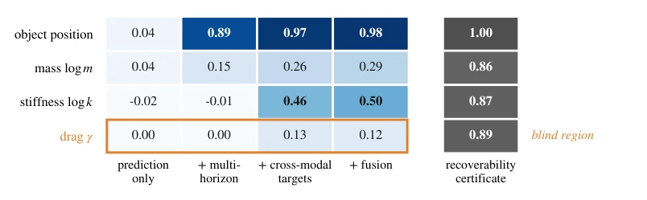
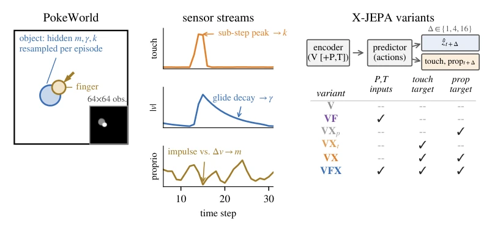
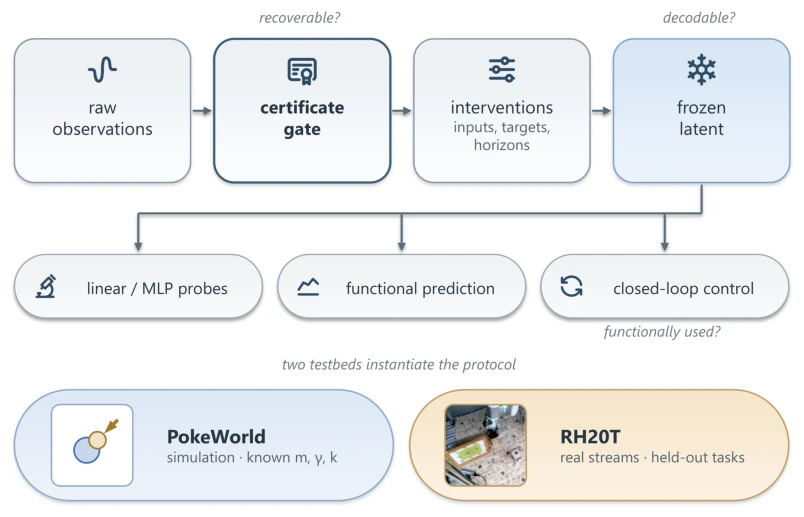
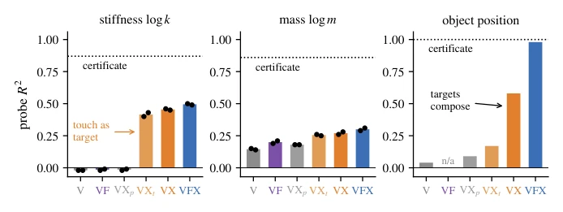
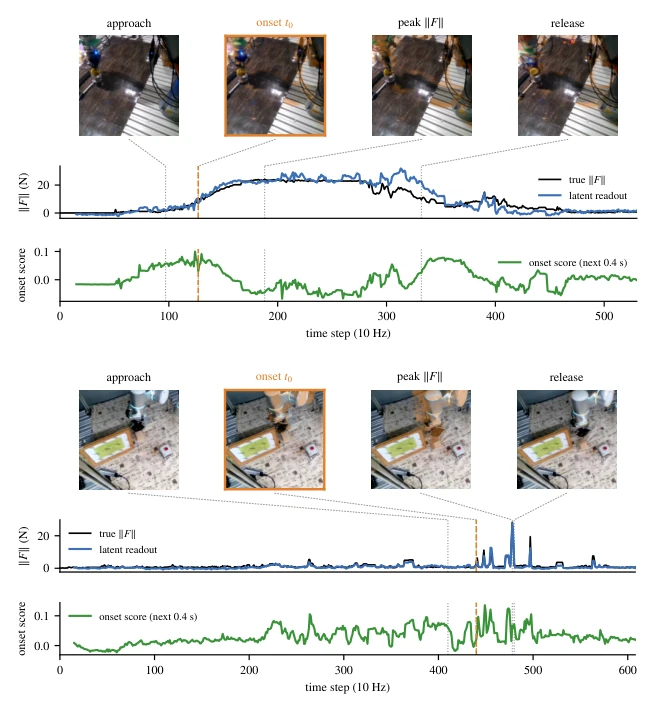
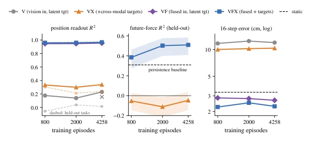
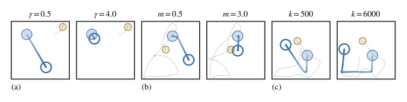
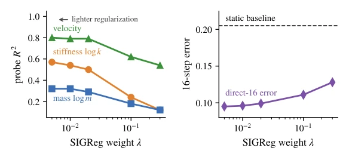
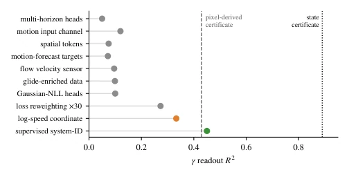
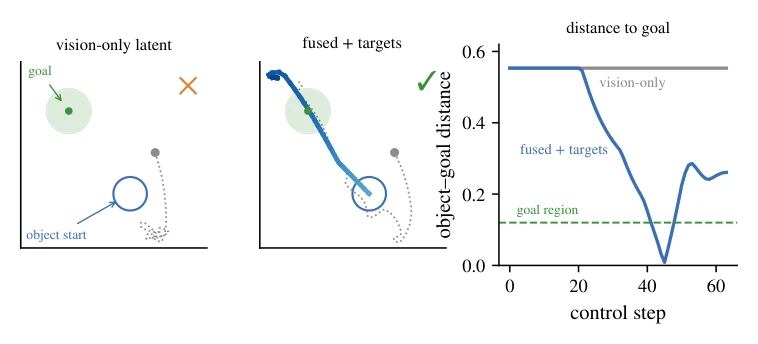

This paper conducts a hardcore 'physical checkup' for world models. The authors do not remain at the self-indulgent notion that 'the model can predict', but instead use the visual deception environment POKEWORLD to force the question upon the model: 'Do you truly understand physical parameters?'. The highlight is the 'certificate gating protocol': first proving recoverability from the data, then testing whether the model has learned it; this logical loop is quite hardcore. To be a bit critical: although it reveals the truth that 'the target determines the content', the conclusion is somewhat pessimistic—deterministic prediction targets fundamentally fail to learn drag, implying a hard limitation of current JEPA-like architectures on contact-rich tasks. However, converting SIGReg hyperparameter tuning into a dose-response curve offers practical advice more useful than pure theory. In summary, this is an autopsy report that dissects the 'black box' into a 'white box', but the scalpel only cuts to the layer of deterministic prediction; if future models develop a Bayesian world model, they might break through this 'blind spot'.
研究动机Motivation
世界模型的核心承诺是“预测未来迫使表征内化物理规律”（LeCun, 2022; Hafner et al., 2023），但学界至今没搞清楚 latent 到底存了什么物理量。现有评估多是事后探测（Garrido et al., 2025; Motamed et al., 2025），或者只证明触觉提供了缺失证据（Ye et al., 2026），缺乏将传感器流、目标结构与数据分布关联到具体参数可识别性的受控干预。这导致我们不知道是环境不可观测，还是模型学不会。例如，接触刚度对操作至关重要，但模型若无法估计它，接触丰富的机器人任务就会失败。本文旨在通过受控干预回答：哪些物理量被 latent 包含，以及是什么决定了这一点。
The core promise of world models is that 'predicting the future forces representations to internalize physical laws' (LeCun, 2022; Hafner et al., 2023), yet the academic community has not yet clarified what physical quantities are stored in the latent. Existing evaluations are mostly post-hoc probing (Garrido et al., 2025; Motamed et al., 2025), or merely prove that touch provides missing evidence (Ye et al., 2026), lacking controlled interventions that link sensor streams, target structures, and data distributions to specific parameter identifiability. This results in uncertainty regarding whether the environment is unobservable or the model fails to learn. For instance, contact stiffness is critical for manipulation, but if the model cannot estimate it, contact-rich robot tasks will fail. This paper aims to answer through controlled interventions: which physical quantities are contained within the latent, and what determines this.

Figure 1: The identifiability map. Linear-probe R2 per physical quantity as the objective is cu- mulatively enriched (columns; POKEWORLD, contact windows), against recoverability certificates (lower bounds from raw observations; nonlinear probes agree, App. C). Multi-horizon pressure re- covers visible state, cross-modal targets recover contact physics, and one certified-recoverable pa- rameter (boxed) is acquired by none—the frontier these objectives leave open.
The overall workflow is based on the X-JEPA architecture (based on LeJEPA/LeWM), with core innovations lying in the POKEWORLD environment and the certificate gating protocol. First, POKEWORLD is constructed where the visual appearance is identical but physical parameters (mass, drag, stiffness) are randomly resampled, ensuring visual information is not leaked. Second, a 'certificate gating' mechanism is established: probes are first trained on raw observations to prove parameter recoverability (recoverability certificate), then the model is trained; if the model fails to learn, it is attributed to the target rather than the environment. Model training employs X-JEPA variants, factorizing changes in input modalities (visual/tactile/proprioceptive) and prediction targets (latent only/add tactile/add proprioceptive), while scanning multi-step prediction horizons. The probing phase utilizes linear/nonlinear probes to read the latent, combined with functional tests (e.g., sliding prediction). Additionally, a dose-response analysis of SIGReg regularization weights is introduced, along with RH20T real-robot validation, to ensure mechanism transferability.

Figure 2: POKEWORLD and the X-JEPA factorial. Left: a force-controlled finger interacts with an object whose mass, drag, and stiffness are resampled every episode and never visible (inset: the actual 64×64 observation). Middle: each sensor stream carries different physics—sub-step tactile peaks carry stiffness, glide decay carries drag, impulse–velocity coupling carries mass. Right: the variant family factorially varies which modalities enter the encoder and which are forecast; all variants share the trunk and the ∆∈{1, 4, 16} heads.

Figure 6: The certificate-gated protocol. Every claim in the paper follows this path. Raw ob- servations must first certify a parameter as recoverable (recoverable?); input, target, and horizon interventions then train variants on identical data; and the frozen latent is read by probes (decod- able?) and by functional prediction and closed-loop control (functionally used?). Two testbeds instantiate it: POKEWORLD, where the hidden parameters are known by construction, and RH20T, where only observables and held-out tasks are available.
In POKEWORLD, factorization experiments reveal: tactile input is ineffective; stiffness is only learned when used as a prediction target (R² 0.50 vs -0.02); single-step prediction exhibits 'lazy equilibrium' where visual latent discards visible states, which can be broken by multi-horizon or cross-modal targets. Drag, while recoverable (cert 0.89), is only learned to 0.13 under model prediction targets, forming a 'blind spot'. Real-robot validation on RH20T demonstrates mechanism transfer: cross-modal targets reduce rollout error by 29%, and force prediction is effective only when fused and predicted. Ablation studies indicate that data scale cannot compensate for missing target structure; arms lacking information or pressure show flat performance within a 5x data range.

Figure 3: Targets, not inputs, decide hidden-parameter content. Probe R2 by variant (gray: no touch target; orange: touch target, vision-only input; blue: full). Stiffness appears only under touch- as-target; position emerges from target composition. Dotted: certificates.

Figure 4: The latent reads contact physics on held-out real episodes, on both embodiments. Top block: KUKA (53 s); bottom block: Flexiv (61 s). Each block shows camera frames at four interaction phases (native-resolution color, cropped to the manipulation zone and brightened for display—the model consumes 96×96 grayscale; orange overlay marks change since the previous panel; dotted connectors mark each frame’s time), force magnitude read from the frozen latent (blue) against the wrist sensor (black), and the trunk’s onset score, which rises ahead of contact (t0, dashed; dotted: frame times)—anticipation, not detection. KUKA traces a full press-and-release arc; Flexiv resolves a train of sharp impulses peak by peak.

Figure 5: The four-arm factorial across scale. Flexiv, within-embodiment (identical robot, tasks, viewpoint, protocol; fixed compute; ×: +50%-compute control). Left: position readout—the fused- input arms sit at the passthrough bound regardless of targets (dashed: held-out tasks). Center: future- force forecasting on held-out tasks—the passthrough-immune force metric: VFX beats persistence at every scale and improves with data; VX never matches persistence. Right: direct 16-step error— the factors compose; V stays ∼4× worse than static at every scale.
其他图片Other Figures

Figure 7: Nothing in the rendering reveals a hidden parameter. Three matched pairs of POKE- WORLD episodes. Within a pair the episodes start from an identical frame and are driven by an identical action sequence; only one hidden parameter differs. Filled circles mark the start (object blue, finger gold), the hollow circle the object’s final position, the blue path its trajectory (light to dark with time), and the dotted path the finger. (a) drag: the low-drag object glides across the arena while the high-drag one stops almost immediately. (b) mass: the same strike sends the light object far and barely moves the heavy one. (c) stiffness: the impact transient differs, and with it the post- contact trajectory. Appearance is identical at every step—only the physics is not.

Figure 8: One knob, every readout. Lightening the anti-collapse weight λ monotonically sharpens every physical probe (left) and halves long-horizon prediction error against the static baseline (right); training is stable across the full 60× range. Arrow: direction of lighter regularization.

Figure 9: The γ intervention ledger. Best γ readout under every intervention deployed against drag, against the pixel-derived (dashed) and state-trajectory (dotted) certificates. Prediction-side mechanisms (gray) plateau; only a linearizing sensed coordinate (orange) and direct supervision (green) move it.

Figure 10: The same task on two frozen latents. One held-out episode, one planner, one budget; only the representation differs. Object path colored by time, finger path dotted, hollow circle the object’s start, shaded disc the goal region. Left: the object-blind vision-only latent (×) — the planner never reaches the object, and the distance never moves off its initial 0.55. Center: the full model (✓) maneuvers the finger to the push side, then drives the object through the goal region. Right: both episodes as object–goal distance.